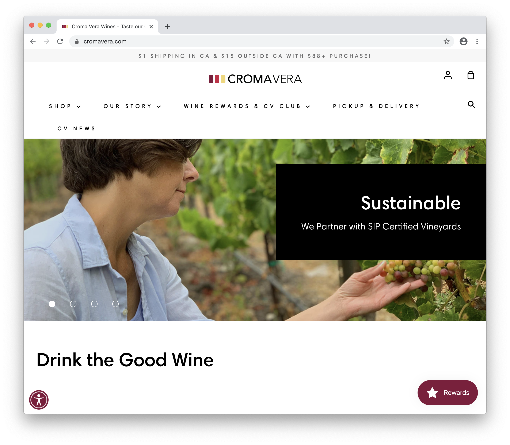
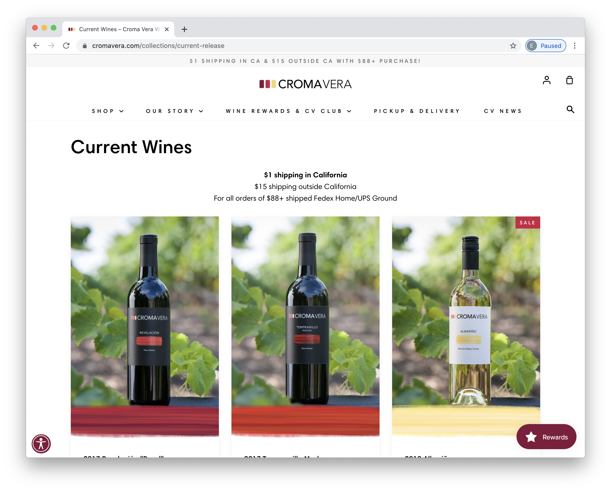
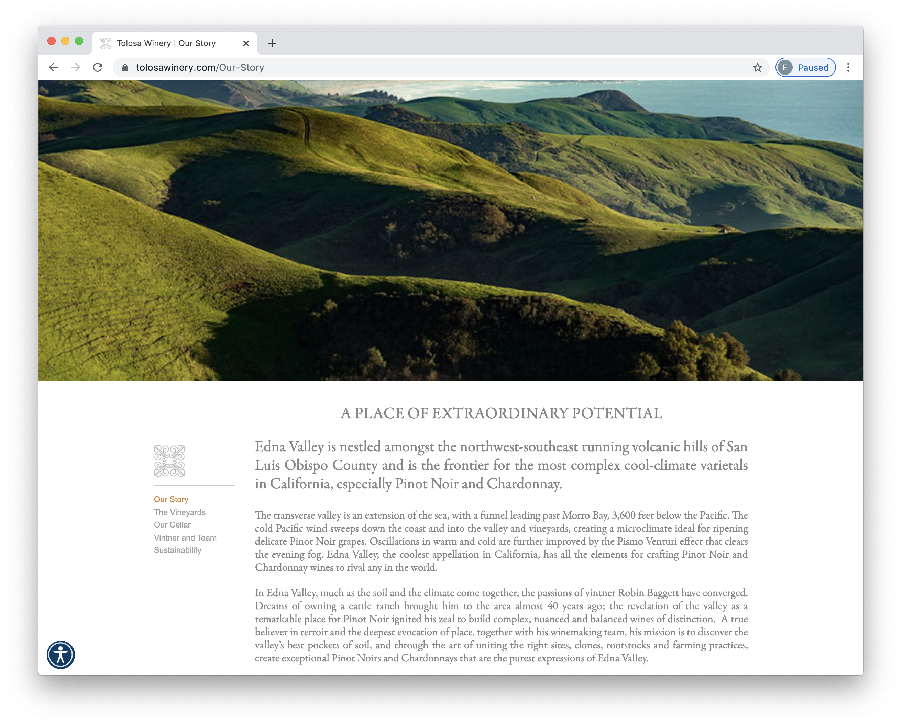
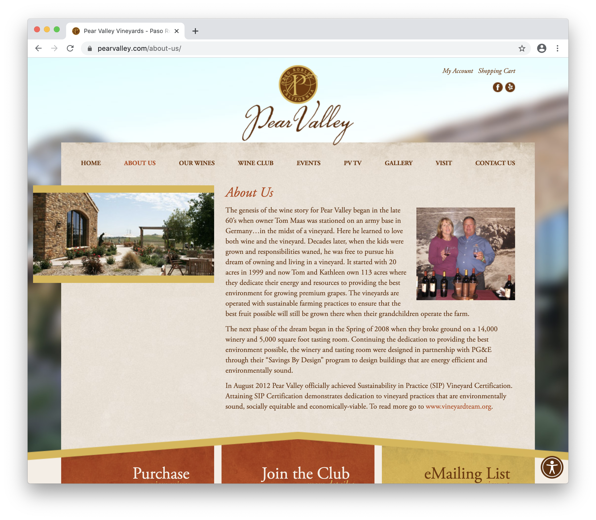

Final project proposal
Introduction
Farmer’s Daughter Winery
The Farmer’s Daughter is a winery that creates a unique viticulture experience, whether you chose to enjoy the wine on your couch in the comfort of your own home, or in one of our tasting rooms. We specialize in Orange Wine, using a fermentation and pressing method that has been around since ancient times, but is currently only popular on the East Coast. We want to share our love for orange wine and leave our customers just as obsessed with the unique bold flavors are we are. We have a passion for sustainability and maintaining the land we operate on.
Target audience
We want to market to anyone that loves wines, want to learn more about wine, and is interested in exploring the world of Orange wines. Customers will be able to use the website to learn more about us, our mission, how to come visit us and the selection of wines we offer.
Our goal is to create an experience that is unique and unforgettable. We strive to share ourr love and passion for the winemaking process with you and deliever a product that is specifc to the San Luis Obispo region.
Comparative analysis
Croma Vera Winery
 Tolosa Winery

Pear Valley Vineyards

Website content
Farmer's Daughter Winery
Natural Is In - 100% organic orange wine produced on the central cost of the sunshine state.
[landscape photo.]
[grapes close up.]
[tasting room.]
Vision
Our passion for great wine is rooted in a love for all beings, connection, and a spreading love. We operate in what we believe to be one of the greatest viticulture sites in the world, hidden in the hills of California’s Central Coast. We have a strong commitment to preserving natural environments, and being a business based in sustainability. We practice conscious farming, native fermentation, and organic products.
[grape vines.]
[wine equitment.]
Wine
Orange Wine is our Speciality.
What is Orange wine?
Orange wine is a bit of a misnomer. It is not a wine made with oranges, nor is it a Mimosa cocktail. Orange wine is something entirely different.
To make an orange wine, you first take white grapes, mash them up, and then put them in a large vessel (often cement or ceramic). Then, you typically leave the fermenting grapes alone for four days to sometimes over a year with the skins and seeds still attached. This is a natural process that uses little to no additives, sometimes not even yeast. Because of all this, they taste very different from regular white wines and have a sour taste and nuttiness from oxidation.
[grape vinyard.]
[wine glasses.]
Our line of Orange Wines features unique and bold flavor profiles:
CALCARIUS 2018: robust and bold, with honeyed aromas of tropical jackfruit
[picture of wine label and bottle #1]
ORANGE BLISS 2019: Strong notes of hazelnut, brazil nut, bruised apple, and oh so sweet bliss.
[picture of wine label and bottle #2]
FRESH FARMER 2017: wood varnish, linseed oil, juniper, sourdough, and dried orange rind.
[picture of wine label and bottle #3]
Because of their boldness, Orange wines pair well with equally bold foods, including curry dishes, Moroccan cuisine, Ethiopian cuisine, Korean dishes with fermented kimchi, and traditional Japanese cuisine, including fermented soybeans. They are diverse, flavorful, and pair well with a large variety of meats and fish.
[wine and food.]
Visit + Contact
The Farmer’s Daughter is open for tasting and events in San Luis Obispo, California.
thefarmersdaughter@gmail.com 805-428-8803 Regular hours: 11am-8pm 7 days a week Walks in tasting welcome, but reservation is preferred and required in order to ensure your spot.
[tasting room.]
[array of wine bottles and glasses.]